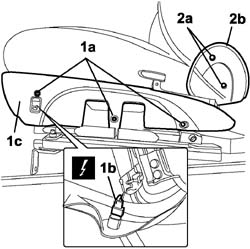
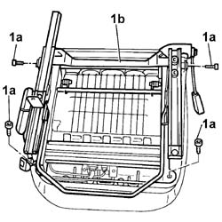
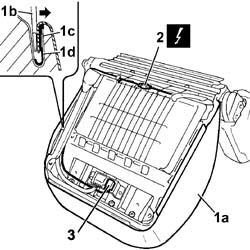
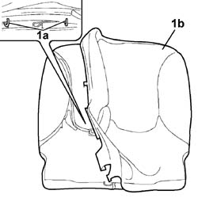
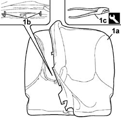

7045D21 Front seat CUSHION COVER, left or right - R.R. with seat removed
- Path
- Procedures > 70 FITTINGS > 7045 FRONT SEATS > 7045D FRONT SEAT COVER/UPHOLSTERY > 7045D21 Front seat CUSHION COVER, left or right - R.R. with seat removed
- Kind
- repair procedure (removal / refitting; the operation number is the code)
- Applies to
- engines: 1.4 8v, 1.6 16v, 1.3 JTD 16V, 1.9 JTD 8V; all production periods
- Interactive page
- https://sloeber94.github.io/elrnDB-fDbl/en/#/2585187
Applies to: engines: 1.4 8v, 1.6 16v, 1.3 JTD 16V, 1.9 JTD 8V; all production periods; only with equipment: 7 seater
 Removing
Removing
 Refitting
Refitting1. Undo bolts (1a) securing the cushion outer side trim, disconnect the connection of seat heating switch (1b) and remove outer trim (1c).
 | Name | Connector |
|---|---|---|
1b | Data not available yet |
2. Undo the bolts (2a) and remove the joint cover side trim (2b).
Carry out the same operation for the remaining side trim.

Applies to: engines: 1.4 8v, 1.6 16v, 1.3 JTD 16V, 1.9 JTD 8V; all production periods; only with equipment: 7 seater
1. Undo the fixing bolts (1a) and remove the support (1b) complete with guide and slide control lever.

Applies to: engines: 1.4 8v, 1.6 16v, 1.3 JTD 16V, 1.9 JTD 8V; all production periods; only with equipment: 7 seater
1. Prise off the whole cover surround (1a) using an ordinary screwdriver with blade of appropriate dimensions (1b), so as to open the channel (1c) and release the cover profile (1d).
2. Disconnect the electrical connection for the squab heater pad.
Name | Connector | |
|---|---|---|
2 | Seat bridges/rear coupling |
3. Prise the seat heater electrical connection up from the anchorage bracket.

Applies to: engines: 1.4 8v, 1.6 16v, 1.3 JTD 16V, 1.9 JTD 8V; all production periods; only with equipment: 7 seater
Release the seat heating cable with branches.
Remove the trim with padding, heat pad and wire and intermediate foam.
1. Break retaining hooks (1a) to detach the trim (1b) from the cushion padding.

Applies to: engines: 1.4 8v, 1.6 16v, 1.3 JTD 16V, 1.9 JTD 8V; all production periods; only with equipment: 7 seater
Refitting
RemovingCheck that the padding and trim are not damaged.
If they are, replace the damaged part.
Fit the trim on the padding.
1. Secure trim (1a) to the cushion padding using new hooks (1b) with the aid of tool (1c).
 | Name | Country |
|---|---|---|
1c | Pliers for metal points | 1.878.017.001 |

Applies to: engines: 1.4 8v, 1.6 16v, 1.3 JTD 16V, 1.9 JTD 8V; all production periods; only with equipment: 7 seater
Position the trim with padding in its seat and arrange the heat pad wire.
Insert the seat heating electrical connector on the anchorage bracket.
Connect the squab heat pad electrical connection.
| Name | Connector |
|---|---|---|
- | Seat bridges/rear coupling |
Fit the cushion trim in its seat and rivet the channels using a rubber mallet.
Position the mount complete with guide and slide control lever and tighten the bolts.
Position the joint cover side trim and secure it using the bolts. Carry out the same operation for the remaining side trim.
Connect the electrical connection to the seat heating switch and secure the cushion side trim with bolts.
| Name | Connector |
|---|---|---|
- | Data not available yet |